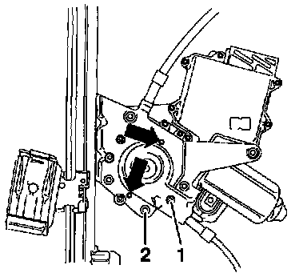
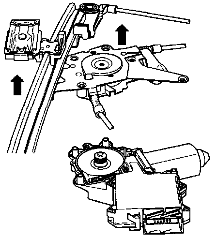
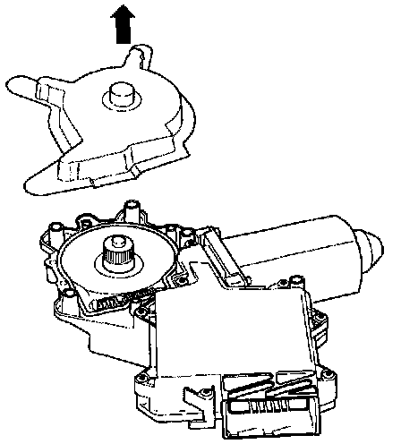
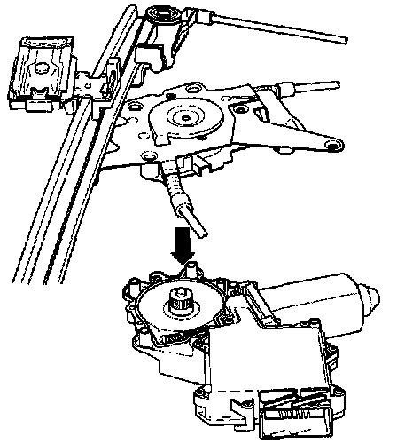
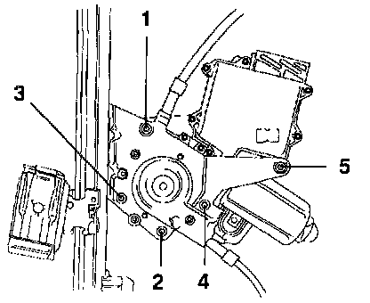

Regulator Repair/Servicing
The following images and procedures are for servicing the front window regulator assembly.Servicing the rear window regulator follows the same principle.
- Remove door trim.
- Partially remove vapor barrier.
- Remove door window .
- Remove window regulator.
CAUTION:
- Do not damage vapor barrier.
- Water leaks will occur if damaged vapor barriers are installed.
- Always replace damaged vapor barriers.
- Do not wrinkle vapor barrier when installing.
- Water leaks will occur if vapor barriers are wrinkled when installed.
Procedures:

- Remove two (Torx T10) bolts -1- from window regulator and motor assembly and install into window regulator at (arrows) to secure base plate to window regulator.
NOTE: These bolts remain on the window regulator.
- Remove all remaining bolts, items -1- and -2- (Torx T10 and Torx T25).

- Remove window regulator from motor in direction of arrows.

- Remove cover from new motor in direction of arrow.
NOTE: Surfaces are coated with lubricant and must not come in contact with dirt, dust or other contaminants. If lubricant is required use high quality lithium based grease.

- Assemble regulator and motor together in direction of arrow and loosely install bolts (Torx T10 and T25).
- Remove two (Torx T10) bolts previously installed on window regulator and motor then install loosely in remaining holes.

- Tighten (Torx T25) bolts in order shown.
- Tightening torque: 3.5 Nm (31 in. lb)
NOTE: Check the window regulator motor assembly for correct function before installing assembly.